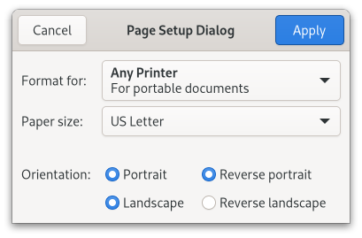

Class
GtkPageSetupUnixDialog
Description [src]
final class Gtk.PageSetupUnixDialog : Gtk.Dialog
implements Gtk.Accessible, Gtk.Buildable, Gtk.ConstraintTarget, Gtk.Native, Gtk.Root, Gtk.ShortcutManager {
/* No available fields */
}GtkPageSetupUnixDialog implements a page setup dialog for platforms
which don’t provide a native page setup dialog, like Unix.

It can be used very much like any other GTK dialog, at the
cost of the portability offered by the high-level printing
API in GtkPrintOperation.
CSS nodes
GtkPageSetupUnixDialog has a single CSS node with the name window and
style class .pagesetup.
Instance methods
gtk_page_setup_unix_dialog_set_page_setup
Sets the GtkPageSetup from which the page setup
dialog takes its values.
gtk_page_setup_unix_dialog_set_print_settings
Sets the GtkPrintSettings from which the page setup dialog
takes its values.
Methods inherited from GtkDialog (10)
gtk_dialog_add_action_widget
Adds an activatable widget to the action area of a GtkDialog.
deprecated: 4.10
gtk_dialog_add_button
Adds a button with the given text.
deprecated: 4.10
gtk_dialog_add_buttons
Adds multiple buttons.
deprecated: 4.10
gtk_dialog_get_content_area
Returns the content area of dialog.
deprecated: 4.10
gtk_dialog_get_header_bar
Returns the header bar of dialog.
deprecated: 4.10
gtk_dialog_get_response_for_widget
Gets the response id of a widget in the action area of a dialog.
deprecated: 4.10
gtk_dialog_get_widget_for_response
Gets the widget button that uses the given response ID in the action area of a dialog.
deprecated: 4.10
gtk_dialog_response
Emits the ::response signal with the given response ID.
deprecated: 4.10
gtk_dialog_set_default_response
Sets the default widget for the dialog based on the response ID.
deprecated: 4.10
gtk_dialog_set_response_sensitive
A convenient way to sensitize/desensitize dialog buttons.
deprecated: 4.10
Methods inherited from GtkAccessible (19)
gtk_accessible_announce
Requests the user’s screen reader to announce the given message.
since: 4.14
gtk_accessible_get_accessible_parent
Retrieves the accessible parent for an accessible object.
since: 4.10
gtk_accessible_get_accessible_role
Retrieves the accessible role of an accessible object.
gtk_accessible_get_at_context
Retrieves the accessible implementation for the given GtkAccessible.
since: 4.10
gtk_accessible_get_bounds
Queries the coordinates and dimensions of this accessible.
since: 4.10
gtk_accessible_get_first_accessible_child
Retrieves the first accessible child of an accessible object.
since: 4.10
gtk_accessible_get_next_accessible_sibling
Retrieves the next accessible sibling of an accessible object.
since: 4.10
gtk_accessible_get_platform_state
Query a platform state, such as focus.
since: 4.10
gtk_accessible_reset_property
Resets the accessible property to its default value.
gtk_accessible_reset_relation
Resets the accessible relation to its default value.
gtk_accessible_reset_state
Resets the accessible state to its default value.
gtk_accessible_set_accessible_parent
Sets the parent and sibling of an accessible object.
since: 4.10
gtk_accessible_update_next_accessible_sibling
Updates the next accessible sibling of self.
since: 4.10
gtk_accessible_update_property
Updates a list of accessible properties.
gtk_accessible_update_property_value
Updates an array of accessible properties.
gtk_accessible_update_relation
Updates a list of accessible relations.
gtk_accessible_update_relation_value
Updates an array of accessible relations.
gtk_accessible_update_state
Updates a list of accessible states. See the GtkAccessibleState
documentation for the value types of accessible states.
gtk_accessible_update_state_value
Updates an array of accessible states.
Methods inherited from GtkBuildable (1)
Methods inherited from GtkNative (5)
gtk_native_get_renderer
Returns the renderer that is used for this GtkNative.
gtk_native_get_surface
Returns the surface of this GtkNative.
gtk_native_get_surface_transform
Retrieves the surface transform of self.
gtk_native_realize
Realizes a GtkNative.
gtk_native_unrealize
Unrealizes a GtkNative.
Methods inherited from GtkRoot (3)
gtk_root_get_display
Returns the display that this GtkRoot is on.
gtk_root_get_focus
Retrieves the current focused widget within the root.
gtk_root_set_focus
If focus is not the current focus widget, and is focusable, sets
it as the focus widget for the root.
Properties
Properties inherited from GtkDialog (1)
Gtk.Dialog:use-header-bar
TRUE if the dialog uses a headerbar for action buttons
instead of the action-area.
deprecated: 4.10
Properties inherited from GtkWindow (25)
Gtk.Window:application
The GtkApplication associated with the window.
Gtk.Window:child
The child widget.
Gtk.Window:decorated
Whether the window should have a frame (also known as decorations).
Gtk.Window:default-height
The default height of the window.
Gtk.Window:default-widget
The default widget.
Gtk.Window:default-width
The default width of the window.
Gtk.Window:deletable
Whether the window frame should have a close button.
Gtk.Window:destroy-with-parent
If this window should be destroyed when the parent is destroyed.
Gtk.Window:display
The display that will display this window.
Gtk.Window:focus-visible
Whether ‘focus rectangles’ are currently visible in this window.
Gtk.Window:focus-widget
The focus widget.
Gtk.Window:fullscreened
Whether the window is fullscreen.
Gtk.Window:handle-menubar-accel
Whether the window frame should handle F10 for activating menubars.
since: 4.2
Gtk.Window:hide-on-close
If this window should be hidden when the users clicks the close button.
Gtk.Window:icon-name
Specifies the name of the themed icon to use as the window icon.
Gtk.Window:is-active
Whether the toplevel is the currently active window.
Gtk.Window:maximized
Whether the window is maximized.
Gtk.Window:mnemonics-visible
Whether mnemonics are currently visible in this window.
Gtk.Window:modal
If TRUE, the window is modal.
Gtk.Window:resizable
If TRUE, users can resize the window.
Gtk.Window:startup-id
A write-only property for setting window’s startup notification identifier.
Gtk.Window:suspended
Whether the window is suspended.
since: 4.12
Gtk.Window:title
The title of the window.
Gtk.Window:titlebar
The titlebar widget.
since: 4.6
Gtk.Window:transient-for
The transient parent of the window.
Properties inherited from GtkWidget (34)
Gtk.Widget:can-focus
Whether the widget or any of its descendents can accept the input focus.
Gtk.Widget:can-target
Whether the widget can receive pointer events.
Gtk.Widget:css-classes
A list of css classes applied to this widget.
Gtk.Widget:css-name
The name of this widget in the CSS tree.
Gtk.Widget:cursor
The cursor used by widget.
Gtk.Widget:focus-on-click
Whether the widget should grab focus when it is clicked with the mouse.
Gtk.Widget:focusable
Whether this widget itself will accept the input focus.
Gtk.Widget:halign
How to distribute horizontal space if widget gets extra space.
Gtk.Widget:has-default
Whether the widget is the default widget.
Gtk.Widget:has-focus
Whether the widget has the input focus.
Gtk.Widget:has-tooltip
Enables or disables the emission of the ::query-tooltip signal on widget.
Gtk.Widget:height-request
Override for height request of the widget.
Gtk.Widget:hexpand
Whether to expand horizontally.
Gtk.Widget:hexpand-set
Whether to use the hexpand property.
Gtk.Widget:layout-manager
The GtkLayoutManager instance to use to compute the preferred size
of the widget, and allocate its children.
Gtk.Widget:margin-bottom
Margin on bottom side of widget.
Gtk.Widget:margin-end
Margin on end of widget, horizontally.
Gtk.Widget:margin-start
Margin on start of widget, horizontally.
Gtk.Widget:margin-top
Margin on top side of widget.
Gtk.Widget:name
The name of the widget.
Gtk.Widget:opacity
The requested opacity of the widget.
Gtk.Widget:overflow
How content outside the widget’s content area is treated.
Gtk.Widget:parent
The parent widget of this widget.
Gtk.Widget:receives-default
Whether the widget will receive the default action when it is focused.
Gtk.Widget:root
The GtkRoot widget of the widget tree containing this widget.
Gtk.Widget:scale-factor
The scale factor of the widget.
Gtk.Widget:sensitive
Whether the widget responds to input.
Gtk.Widget:tooltip-markup
Sets the text of tooltip to be the given string, which is marked up with Pango markup.
Gtk.Widget:tooltip-text
Sets the text of tooltip to be the given string.
Gtk.Widget:valign
How to distribute vertical space if widget gets extra space.
Gtk.Widget:vexpand
Whether to expand vertically.
Gtk.Widget:vexpand-set
Whether to use the vexpand property.
Gtk.Widget:visible
Whether the widget is visible.
Gtk.Widget:width-request
Override for width request of the widget.
Properties inherited from GtkAccessible (1)
Signals
Signals inherited from GtkDialog (2)
GtkDialog::close
Emitted when the user uses a keybinding to close the dialog.
deprecated: 4.10
GtkDialog::response
Emitted when an action widget is clicked.
deprecated: 4.10
Signals inherited from GtkWindow (5)
GtkWindow::activate-default
Emitted when the user activates the default widget
of window.
GtkWindow::activate-focus
Emitted when the user activates the currently focused
widget of window.
GtkWindow::close-request
Emitted when the user clicks on the close button of the window.
GtkWindow::enable-debugging
Emitted when the user enables or disables interactive debugging.
GtkWindow::keys-changed
Emitted when the set of accelerators or mnemonics that
are associated with window changes.
deprecated: 4.10
Signals inherited from GtkWidget (13)
GtkWidget::destroy
Signals that all holders of a reference to the widget should release the reference that they hold.
GtkWidget::direction-changed
Emitted when the text direction of a widget changes.
GtkWidget::hide
Emitted when widget is hidden.
GtkWidget::keynav-failed
Emitted if keyboard navigation fails.
GtkWidget::map
Emitted when widget is going to be mapped.
GtkWidget::mnemonic-activate
Emitted when a widget is activated via a mnemonic.
GtkWidget::move-focus
Emitted when the focus is moved.
GtkWidget::query-tooltip
Emitted when the widget’s tooltip is about to be shown.
GtkWidget::realize
Emitted when widget is associated with a GdkSurface.
GtkWidget::show
Emitted when widget is shown.
GtkWidget::state-flags-changed
Emitted when the widget state changes.
GtkWidget::unmap
Emitted when widget is going to be unmapped.
GtkWidget::unrealize
Emitted when the GdkSurface associated with widget is destroyed.
Signals inherited from GObject (1)
GObject::notify
The notify signal is emitted on an object when one of its properties has its value set through g_object_set_property(), g_object_set(), et al.